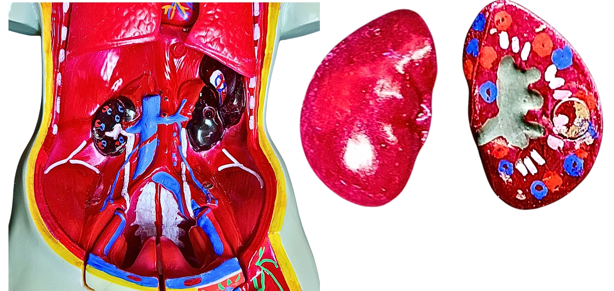

- Ở mỗi người thông thường sẽ có 2 quả thận.
- Đơn vị chức năng của thận là nephron, gồm:
- Ông lượn gần
- Ống lượn xa
- Ống góp
- Thận có cấu tạo gồm 3 phần:
- Vỏ thận
- Bao Bowman
- Cột thận
- Nhu mô thận
- Tủy thận
- Bể thận
- Khoảng 1 triệu nephron
- Chức năng chính của thận là lọc máu để loại bỏ chất thải, duy trì cân bằng nước và các chất điện giải,
và điều chỉnh áp lực máu và nồng độ chất dinh dưỡng trong cơ thể.